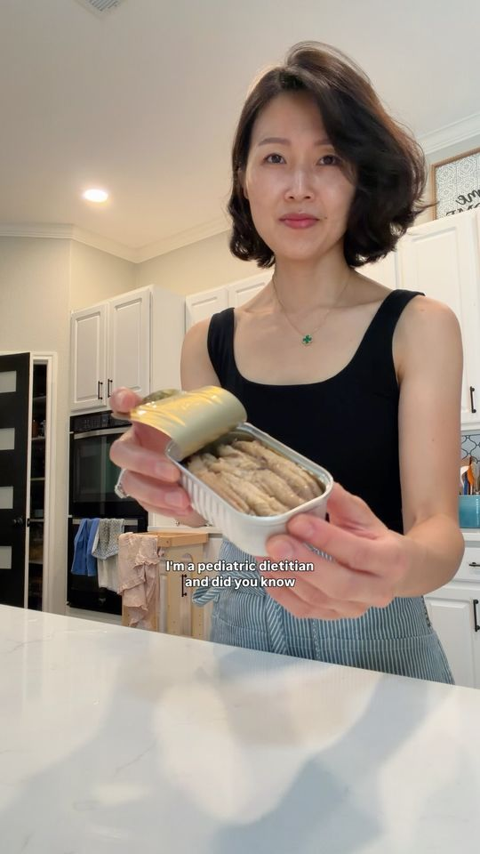

Creamy sardine hummus

Ingredients
- chickpeas
- olive oil
- lemon juice
- bread
- sardine
Steps
- Combine with chickpeas for an extra boost of iron, some olive oil for healthy fat, and lemon juice for vitamin C which can increase iron absorption by 67%.
- Blend until smooth and you can serve as is, trust me you need the spoon.
- Or this is my favorite bread for babies, you'll need to toast it, slice into thick strips, spread, and this is how we make every bite count.
From the video's narration and on-screen text, by @kidfriendly.meals on Instagram. Open original